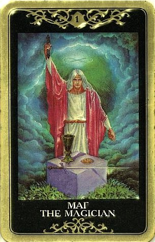

Маг — мастер, который пользуется авторитетом, способен сам увлечься какой то идеей и повести за собой других.
Однако Аркан предупреждает, что человек слишком доверяет субъективности и своим иллюзиям, его опасность в том, что он может навязать их другим.
Процесс протекает под его непосредственным контролем.
Маг — символ успеха.
В сфере личностных взаимоотношений маг означает увлечение, привязанность.

Появляются новые возможности для решения старых проблем, достижения поставленных целей, причем ожидается скорое развитие событий.
Маг – весьма энергетически насыщенная и позитивная карта, и она взывает к столь же энергичному и созидательному действию со стороны вопрошающего («сам захотел – сам сделал»).
Маг говорит – у тебя есть власть. Прямо в настоящий момент тебе дана способность управлять ходом событий и контролировать свое окружение. Напряги волю и разум – и ты сможешь подчинить себе элементы в игре, людей, ресурсы, движущие силы действа. Разве тебе этого не хочется? Carpe diem! Это редкая возможность преобразить ситуацию, перейти на качественно иной уровень бытия, превзойти самого себя, освоить новые сферы жизни, достичь новых высот (материальных, интеллектуальных, романтических, творческих, духовных – каких угодно).
Маг, как первая карта первой семерицы, всегда означает начало какого-то нового периода жизни, когда еще ничего не решено и не сделано никаких ошибок.
Маг говорит, что весь процесс, о котором задан вопрос, протекает под непосредственным контролем вопрошающего, он и есть главное действующее лицо, и поэтому ему решать, в какую сторону следует повернуть ситуацию.
Как правило карта Мага говорит о том, что настоящее время – это период относительной безопасности и успеха, когда вполне можно создать себе благоприятные условия и вообще взять нечто под свой контроль.
Карта дает понять, что есть все возможности преобразовать и наладить свою жизнь. По Магу обычно перемены исходят от самого вопрошающего, хотя бывает и так, что жизнь преобразует какой-то внешний фактор (намек на это могут дать окружающие карты).
Маг сообщает об отличной возможности воплотить задуманное в реальность.
Он предвещает успех и возвещает физически ощутимое начало действий.
Он может указывать на начало предприятия не хуже Шута, на внезапное озарение, просветление. Если энергия Шута хаотична, то энергия Мага – это весьма целеустремленный и упорядоченный порыв. Что с этим порывом будет дальше и к чему он приведет, покажут окружающие карты.
Главное, что делает Маг – производит изменения, чтобы вызвать появление желаемых результатов. Он может делать это как художник, полководец или врач.
Маг – неоднозначная карта в любви.
С одной стороны, он снискал себе славу знака мощной, яркой, уверенной мужской сексуальности. Единица – архетип мужского числа, да и жезл Мага является фаллическим символом.
Партнер, описываемый Магом – яркая личность, сексуальная, мужественная, самоуверенная, обладающая всей полнотой физических и духовных способностей. Не так уж редко - тонкий диктатор и манипулятор, вне зависимости от половой принадлежности. Маг умеет очаровывать и охмурять. Он умеет делать первый шаг или притягивать, не делая этого шага, но мотивируя на это другого.
При не особенно благоприятных окружающих картах (венцом тут, конечно, является Дьявол) Маг акцентирует вопросы власти, контроля и противоборства сторон («в том поединке своеволий кто в чьей руке был только мяч?»).
Когда девиз Мага «Я хочу!» налетает на девиз «А я не хочу!», формируются вязкие силовые отношения («будешь мой (-я)!»), нешуточные игры, противостояния, борьба воль, иногда «до победы», после которой мироздание восстановлению не подлежит.
Маг очень предприимчивый и волевой товарищ, и в сущности прет как танк, устраняя все препятствия на пути (хотя внешне это может выглядеть отнюдь не так прямолинейно, а очень даже завуалированно, особенно это касается Магов женского пола).
Ему свойственна исключительная самомотивация (именно «само» - вторая сторона может не мотивировать и даже всячески отбрыкиваться), и он не успокаивается, пока не добьется своего. Иногда указывается, что он привык получать все и сразу, и терпение не сильная его сторона, но с этим можно поспорить.
Маг сосредотачивается на задаче всей волей, «всеми помыслами своими, всем разумением своим» (именно поэтому Маг - отличная карта для обучения типа медицинского, в процессе которого человек готов пройти через все и подчинить себя поставленной цели). Вообще его «профессиональный совет» - отдать делу тело и душу. А данном случае «делом» становится завоевание другого человека. Поэтому, как сказал бы великий Булгаков, будьте благонадежны. Если это действительно его цель, он изыщет средства.
В то же время Маг – преизрядный индивидуалист. Единица есть единица. Его индивидуальность сильна настолько, что особой потребности в дополнении он не ощущает.
Он эгоистичен, умен, не особенно сентиментален и наделен сильнейшей волей к поступку – например, к прекращению отношений, которые его не устраивают, или к завязыванию отношений, которые ему сейчас понадобились.
Он не всегда склонен обращать внимание на настроения и чувства других людей (вернее, считается с ними постольку, поскольку это в его интересах).
Как и во всем остальном, Маг говорит, что в нашей власти преобразить ситуацию в желаемом направлении – найти вторую половину, развестись с первой... короче, сотворить обыкновенное чудо. Совет, который Маг может дать в любви – решать проблемы! Своими руками ковать новое, небывалое прежде счастье, учиться и учить, строить отношения так, как хочется, создавать день за днем свой шедевр, сад на месте пустыни.